Вена, 7 ноября 2026
Утро с семьёй сына, рождественский рынок и золотая осень Шёнбрунна
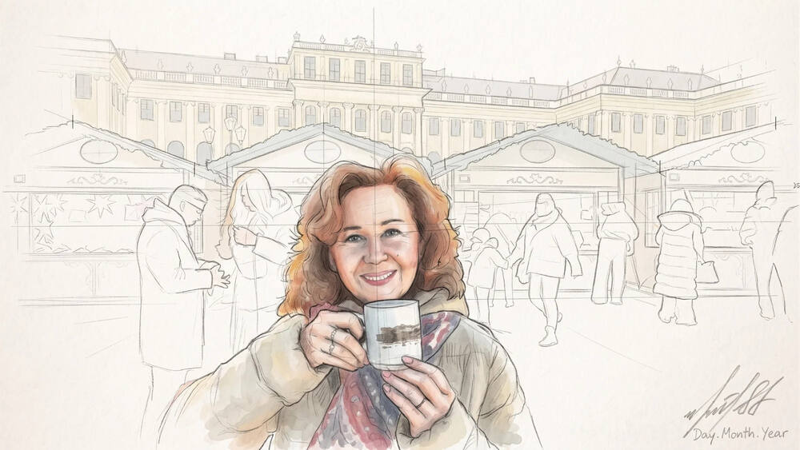
Утро с семьёй сына
Встретились мы поздно ночью, а утро началось за общим столом. Завтрак приготовили Лариса с Ксюшей, и все рассказывали наперебой.
Внуки в радостном балагане показывали, чему научились: кто танец, кто кувырки через голову.
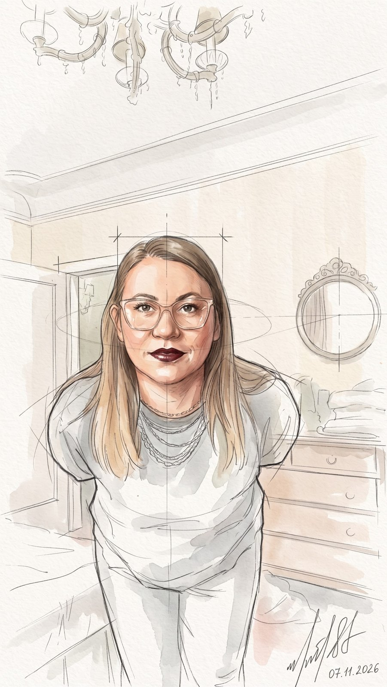
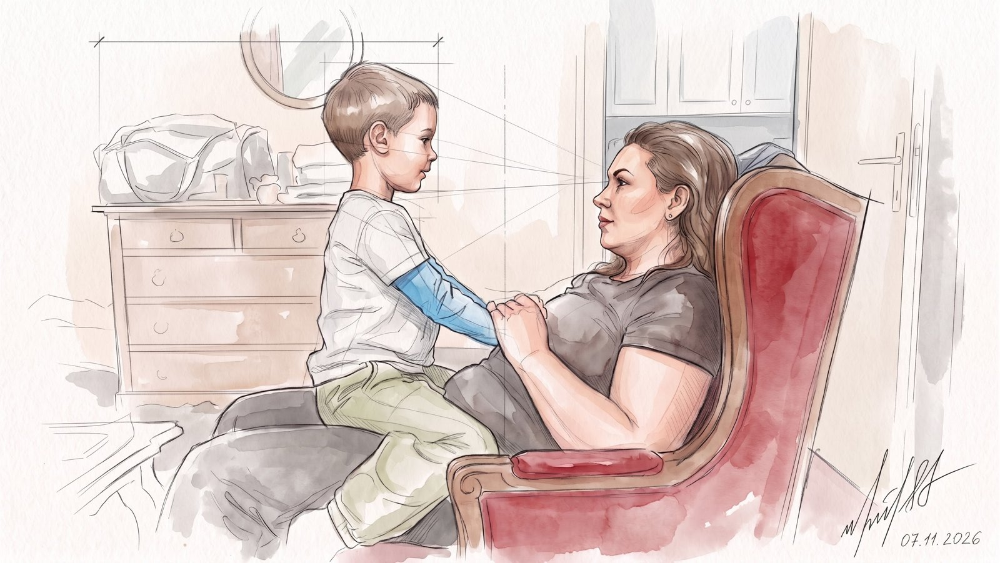
Потом вышли все вместе к Опере. Здесь нас посадили на туристический автобус, а сами повели выгуливать детей, Лию и Илая.
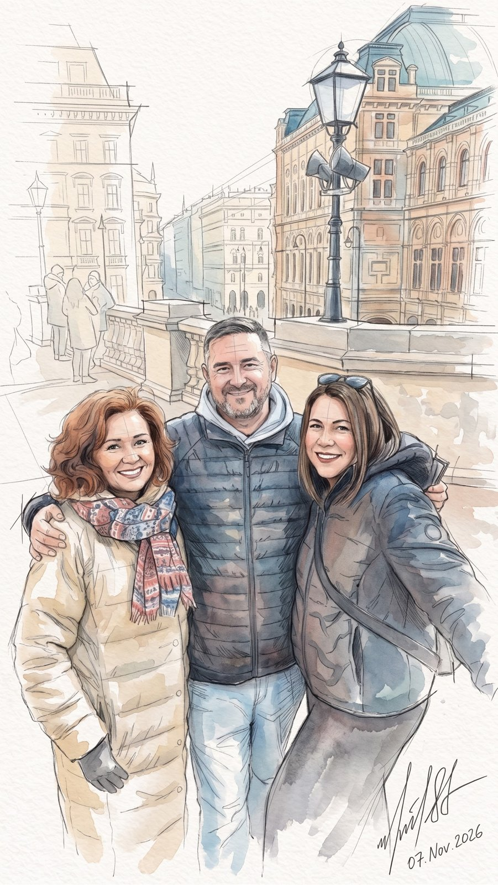
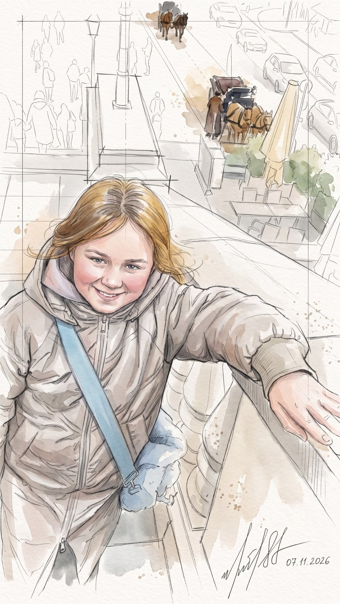
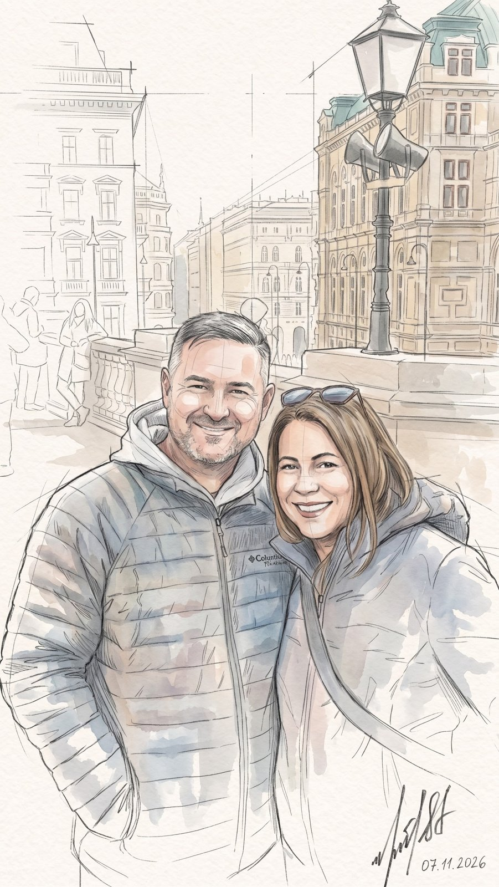
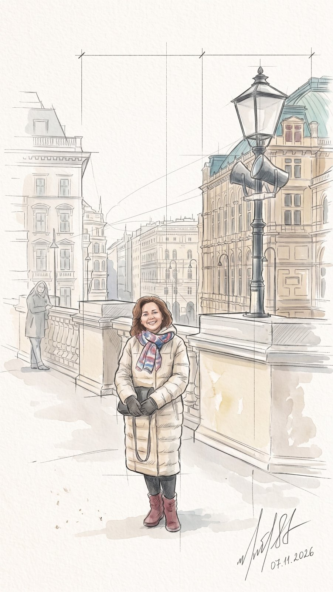
А мы покатили по городу, мимо красных трамваев и кирпичных шпилей, на окраину.
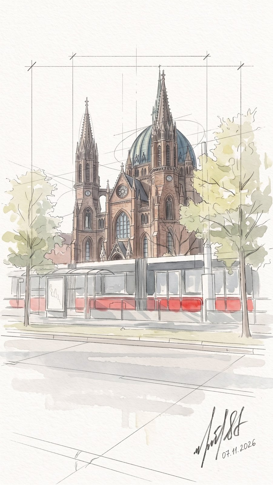
Рождественский рынок у дворца
Автобус привёз нас в Schönbrunn (Шёнбрунн — летняя резиденция Габсбургов). Жёлтый «шёнбруннский» цвет фасада потом можно узнать по всей бывшей империи.
До обеда. На площади перед дворцом уже стоят деревянные домики рождественского рынка: его открыли накануне.
Пахнет корицей и пуншем, в домиках игрушки и пряники. Взяли по кружке горячего пунша и постояли напротив жёлтого фасада.
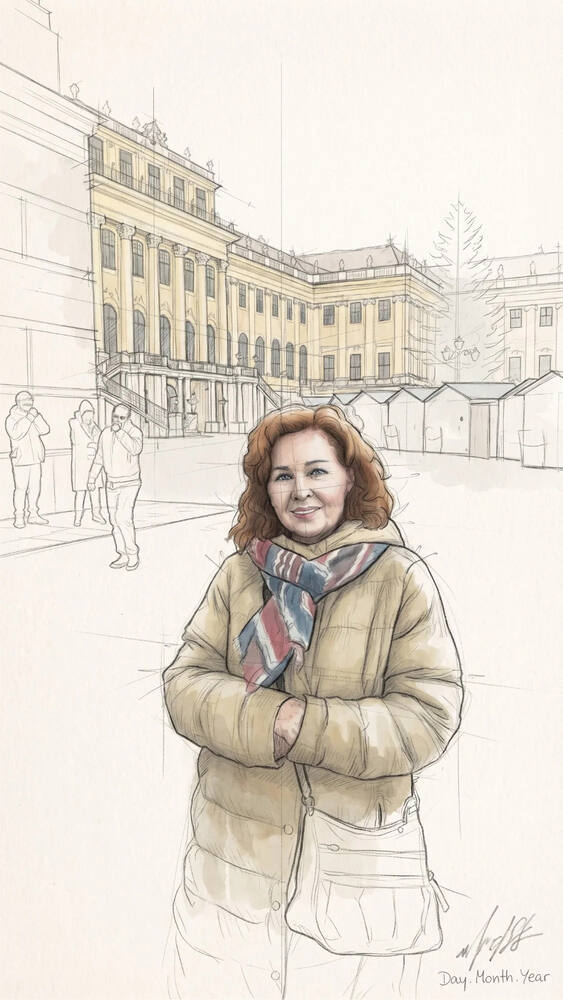
Золотой парк
Днём. Гуляем по Schlosspark (Шлосспарк — дворцовый парк): жёлтые аллеи, под ногами листья. Тот самый парк, где гуляла императрица Сиси, — только сейчас он весь золотой.
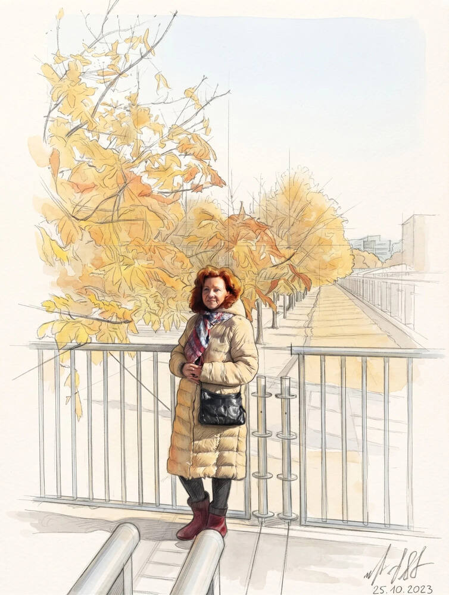
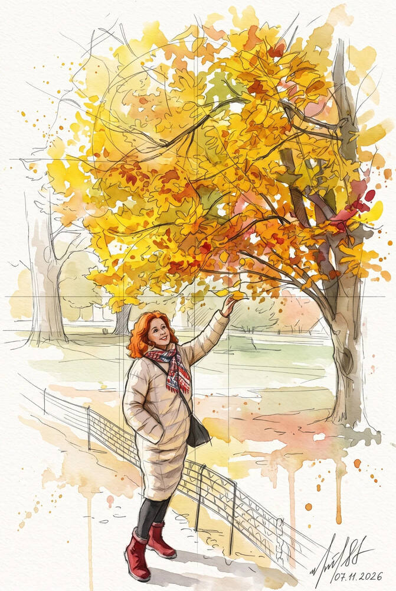
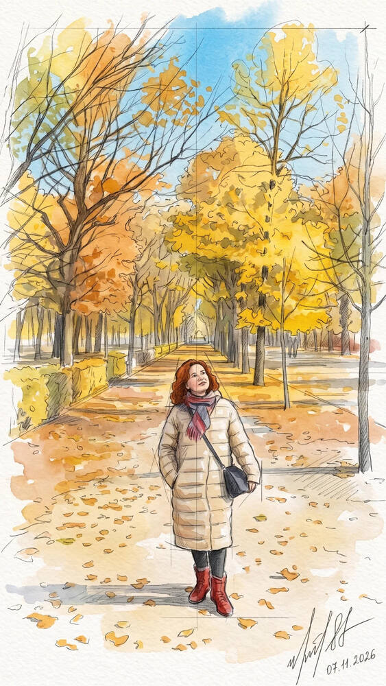
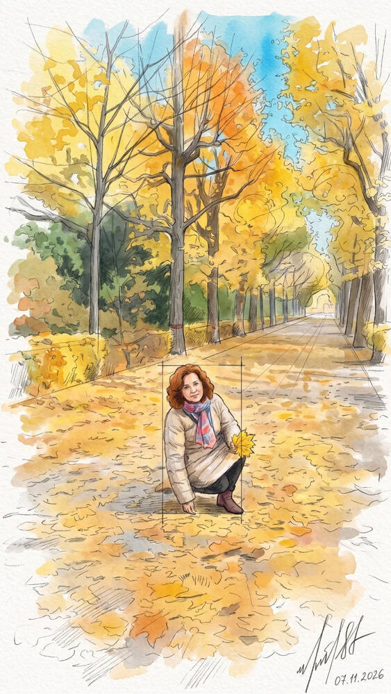
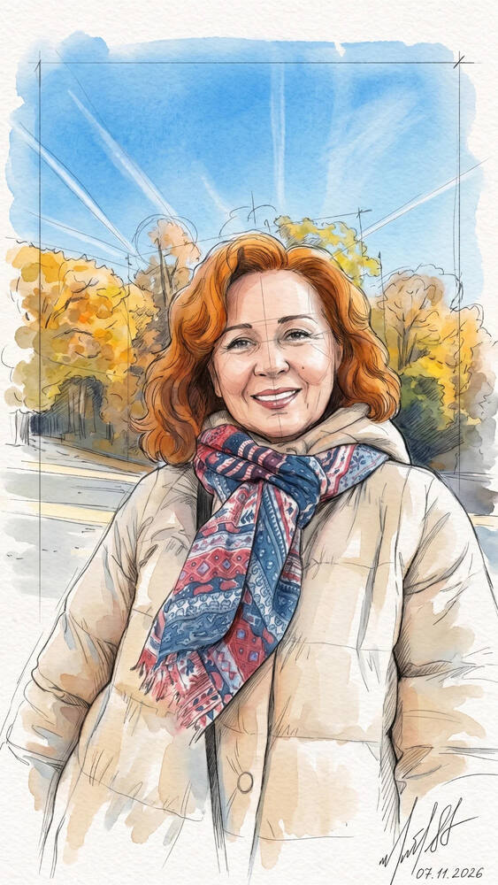
Фонтан Нептуна
Дошли до Neptunbrunnen (Нептунбруннен — фонтан Нептуна) у подножия холма. Над ним, на вершине, — колоннада Gloriette (Глориетта).
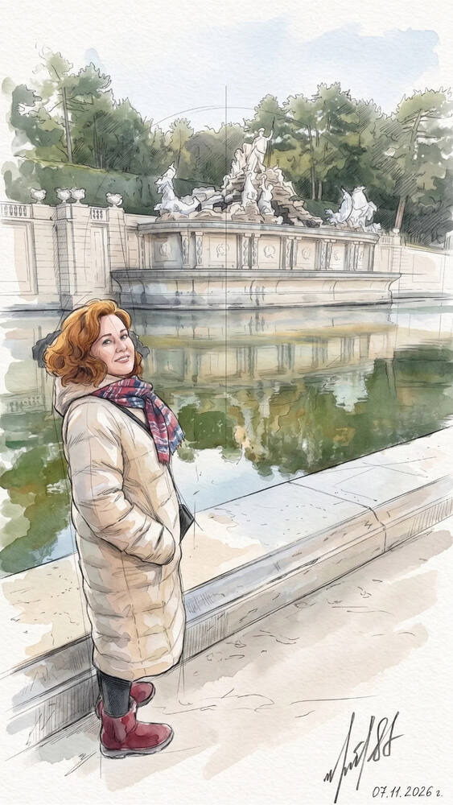
Римские руины
Под конец прогулки. Römische Ruine (Рёмише Руине — римские руины): их построили как украшение парка, а выглядят совсем старыми.
Ближе к вечеру вернулись в город и поужинали в старом венском ресторане Zum Stöger (Цум Штёгер — «У Штёгера») на Ramperstorffergasse (Рамперсторфергассе). В ноябре в Вене время гуся: Martinigansl (Мартинигансль — гусь ко Дню святого Мартина, 11 ноября).
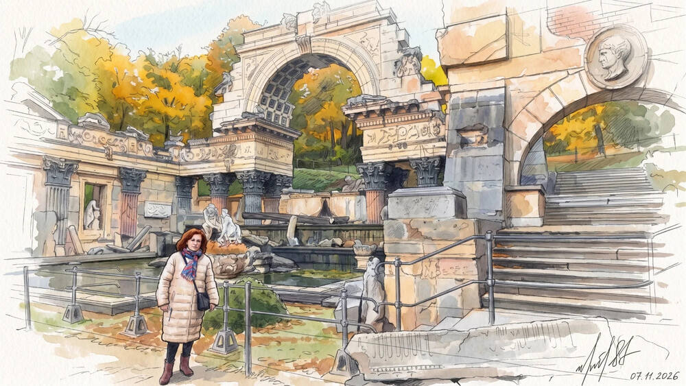